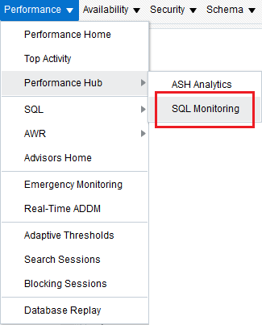
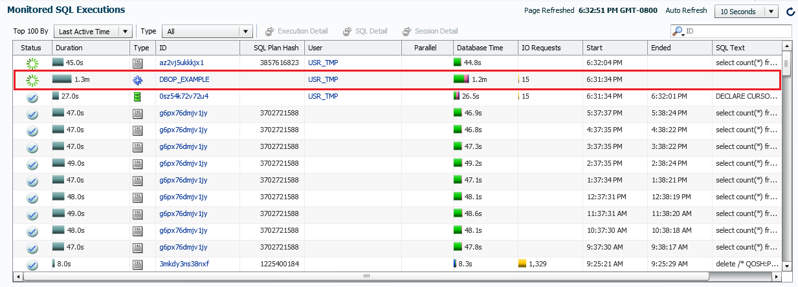
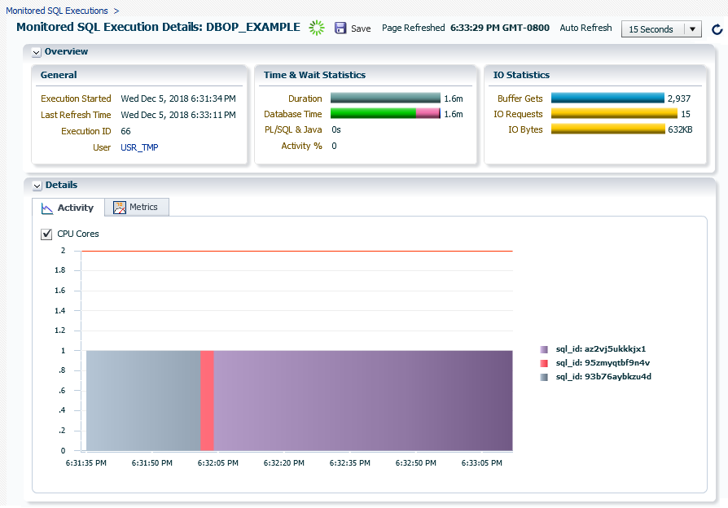

This 15-minute tutorial shows you how to monitor a database
operation using Oracle Enterprise Manager Cloud Control (Cloud
Control).
Background
Oracle Database operations are either simple or composite. A
simple database operation is a single SQL statement or PL/SQL
statement. Cloud Control automatically monitors a simple
database operation when it runs in parallel, or when it has
consumed at least 5 seconds of CPU time or I/O time in a single
execution.
A composite database operation typically consists of a
combination of multiple SQL and PL/SQL statements. You begin and
end a composite database operation using the PL/SQL procedures DBMS_SQL_MONITOR.BEGIN_OPERATION
and DBMS_SQL_MONITOR.END_OPERATION respectively.
Only one composite database operation can run at a time in a
database session.
Using Cloud Control, you can monitor database operations while
they are executing, and view the details related to the time and
resources consumed by them.
What Do You Need?
You must have the following software before you run this
tutorial:
Oracle Database 18c Enterprise Edition
Oracle Enterprise Manager Cloud Control (Cloud Control) 13c
Release 3
An Oracle Database 18c instance configured in Cloud Control
The following initialization parameters configured for the
Oracle Database 18c instance:
STATISTICS_LEVEL initialization parameter
set to TYPICAL (the default value) or ALL
CONTROL_MANAGEMENT_PACK_ACCESS
initialization parameter set to DIAGNOSTIC+TUNING
(the default value)
Set Up
the Tutorial Environment
Using SQL*Plus, connect to the Oracle Database 18c instance
as the SYS user. This database instance should
be already configured in Cloud Control.
Run the script setup.sql
to set up the tutorial environment. The script takes a few
seconds to complete and displays the following message on
completion:
***** Environment Setup Completed *****
Note: Do not close the SQL*Plus window.
Open
the Oracle Database 18c Instance Home Page in Cloud Control
Log in to Cloud Control.
Navigate to the home page of the Oracle Database 18c
instance in which you had executed the setup.sql
script.
The db_operation.sql script starts a database
operation having the name DBOP_EXAMPLE. The DBOP_EXAMPLE operation is a composite database operation, that is, it contains many SQL statements.
Note: Do not wait for the db_operation.sql
script to complete and go to the next step of the tutorial. Do
not close the SQL*Plus window.
Monitor
the Database Operation Using Cloud Control
Go to the Cloud Control window and from the Performance
menu, select Performance Hub and then SQL
Monitoring.

Description
of the illustration sql-monitoring-menu.pngNote: If the database login page is displayed, then log
in as the SYS user.
The Monitored SQL Execution page is displayed.
The Monitored SQL Execution page lists all the SQL
statements, PL/SQL statements, and composite database
operations that are monitored by Cloud Control. You should
also see the DBOP_EXAMPLE operation listed on
top. 
Description
of the illustration monitored-sql-executions-page.png
Click the DBOP_EXAMPLE link.
The Monitored SQL Execution Details page for the DBOP_EXAMPLE
operation is displayed. You may see a different information in
Cloud Control than what is shown in the following image. 
Description
of the illustration
monitored-sql-execution-details-page.png
The Overview section shows the general information,
time and wait statistics, and IO statistics for the DBOP_EXAMPLE
operation.
The Details section shows two tabs - Activity
tab and Metrics tab. The Activity tab is
selected by default.
In the Activity tab, click the SQL ID that is consuming the maximum CPU time, that is, click the largest
rectangular area in the chart or click the corresponding SQL ID in
the legend.
The Details section shows many tabs. The Statistics
tab is selected by default, and it shows various statistics of
the SQL statement, such as wait statistics, execution
statistics, and shared cursors statistics as shown in the
preceding image.
Go to the SQL*Plus window and run the script cleanup.sql.
The cleanup.sql script cleans up the tutorial
environment and terminates the SQL*Plus session. The script
takes a few seconds to complete and displays the following
message on completion:
 Monitor
a Database Operation Using Cloud Control
Monitor
a Database Operation Using Cloud Control Before You Begin
Before You Begin Set Up
the Tutorial Environment
Set Up
the Tutorial Environment Open
the Oracle Database 18c Instance Home Page in Cloud Control
Open
the Oracle Database 18c Instance Home Page in Cloud Control Start
a Database Operation
Start
a Database Operation Monitor
the Database Operation Using Cloud Control
Monitor
the Database Operation Using Cloud Control Clean
Up the Tutorial Environment
Clean
Up the Tutorial Environment